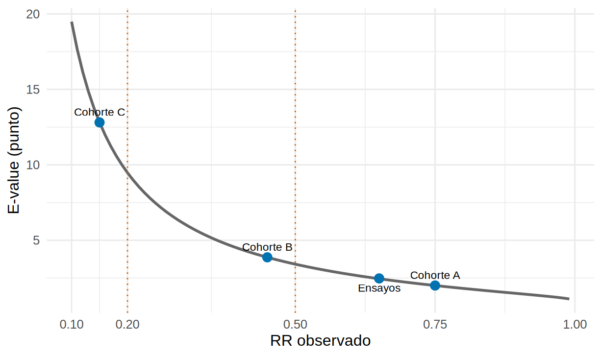

library(tidyverse)
library(metafor)
source("R/funciones_extra_a.R") # num(), pct()
source("R/funciones_epi.R") # e_value()
source("R/funciones_cap22.R") # certeza_final(), marca_efecto_grande()
theme_set(theme_minimal(base_size = 12))
# Metaanálisis FICTICIO de ensayos (Cap. 21): lo usamos solo como RR de referencia
ensayos <- read_csv("Bases/metaanalisis_isglt2.csv", show_col_types = FALSE)
res <- rma(yi = log_rr, sei = se_log_rr, data = ensayos, method = "REML")
rr_ensayos <- exp(c(res$b, res$ci.lb, res$ci.ub))GRADE con estudios no aleatorizados: ROBINS-I y cuándo se puede subir
Nota🩺 Escenario
La guía necesita saber qué pasa con el iSGLT2 en pacientes que los ensayos casi no incluyeron (ancianos frágiles, TFGe muy baja). Solo hay cohortes observacionales, como la del Cap. 12. Un colega dice: «el RR es bueno y el E-value es alto, así que la certeza sube». Otro: «es observacional, así que muy baja y punto». Ninguno está aplicando GRADE: los dos se saltan el razonamiento.
Lo que vamos a hacer
- Ver las dos formas de partir con estudios observacionales (clásica y con ROBINS-I) y cuándo se usa cada una.
- Leer el ejemplo de confusión no medida del Cap. 12 con ojos de GRADE (sin repetir el análisis).
- Usar el E-value como insumo del juicio para subir (efecto grande, dosis-respuesta, confusión que atenuaría) y ver cuándo no se debe subir.
Paso 1: dos maneras de empezar
Con ensayos el punto de partida es «alta». Con estudios observacionales hay dos enfoques:
- Clásico: se parte de baja, porque la confusión es probable. Después se puede subir si se cumplen ciertas condiciones. El riesgo de sesgo se valora de forma general y casi siempre ya está «contado» en la partida.
- Con ROBINS-I (Risk Of Bias In Non-randomized Studies of Interventions; Sterne y cols., BMJ 2016): se parte de alta, porque la comparación de referencia es un ensayo objetivo (target trial, el ensayo ideal que querrías haber hecho) y la herramienta mide cuánto se aleja cada estudio de él. La certeza se baja según el riesgo de sesgo; así lo propone la guía GRADE 18 (Schünemann y cols., 2019).
La segunda forma es más exigente y más informativa: obliga a mirar dominio por dominio qué se desvía del ensayo ideal. Una correspondencia orientativa entre el juicio global de ROBINS-I y los niveles que se bajan (el detalle y los matices están en la guía GRADE 18; por verificar al aplicarla):
tribble(
~`ROBINS-I (global)`, ~`Qué significa`, ~bajo, ~alto,
"Bajo", "Comparable a un ensayo bien hecho", 0, 0,
"Moderado", "Sólido para un observacional, no comparable a un ensayo riguroso", 0, 1,
"Serio", "Problemas importantes en al menos un dominio", 1, 2,
"Crítico", "Demasiado problemático para dar una estimación útil", 2, 3
) |>
mutate(`Niveles que se bajan` = paste(bajo, "a", alto),
`Certeza que queda (sin otros problemas)` = map2_chr(alto, bajo, \(a, b)
paste(unique(c(certeza_final("Alta", bajar = a), certeza_final("Alta", bajar = b))), collapse = " a "))) |>
select(-bajo, -alto) |>
knitr::kable()| ROBINS-I (global) | Qué significa | Niveles que se bajan | Certeza que queda (sin otros problemas) |
|---|---|---|---|
| Bajo | Comparable a un ensayo bien hecho | 0 a 0 | Alta |
| Moderado | Sólido para un observacional, no comparable a un ensayo riguroso | 0 a 1 | Moderada a Alta |
| Serio | Problemas importantes en al menos un dominio | 1 a 2 | Baja a Moderada |
| Crítico | Demasiado problemático para dar una estimación útil | 2 a 3 | Muy baja a Baja |
Qué vemos. Empezar de «alta» no significa terminar alto: con riesgo serio quedas en baja o muy baja y con crítico, en muy baja o, como mucho, baja. El resultado práctico suele ser parecido al del enfoque clásico, pero con razones explícitas por dominio. Y no hay que contar dos veces: si ya partiste de «alta» y bajaste por ROBINS-I, no vuelvas a subir por los mismos motivos sin pensarlo (la guía 18 discute este punto; por verificar el detalle).
Paso 2: los siete dominios de ROBINS-I, en clave de nefrología
ROBINS-I evalúa siete fuentes de sesgo frente al ensayo objetivo:
- Confusión: ¿los tratados y no tratados eran comparables? (el dominio que más baja en la práctica).
- Selección de participantes: ¿se incluyó a todos desde el inicio del seguimiento? (sesgo de inmortalidad).
- Clasificación de las intervenciones: ¿se sabe bien quién tomaba el fármaco y desde cuándo?
- Desviaciones de las intervenciones previstas: cambios de tratamiento durante el seguimiento.
- Datos faltantes: pérdidas y su relación con el desenlace.
- Medición de los desenlaces: ¿igual en ambos grupos? (por ejemplo, controles de TFGe más frecuentes en tratados).
- Selección del resultado reportado: ¿se eligió entre varios análisis posibles?
Los dominios 2 y 3 son los que más sorprenden a quien viene de ensayos: en una cohorte, el momento en que empieza el seguimiento puede crear beneficios falsos (12.1).
Paso 3: el ejemplo del Capítulo 12, leído con ojos de GRADE
En 12.8 (sin repetir el análisis) analizamos una cohorte simulada de iSGLT2 y vimos tres cosas. Las traducimos a GRADE:
- El «confusor fantasma». El temor era que los tratados fueran los más robustos (menos frágiles), algo que no se midió. En ROBINS-I eso es el dominio de confusión: no hay forma de comprobarlo con los datos, así que la valoración pasa por el E-value y por comparar con los confusores que sí se midieron (benchmarking). El E-value no «arregla» el sesgo: informa el juicio.
- El control negativo. El fármaco parecía «proteger» de fracturas, algo biológicamente poco plausible. Es una señal de sesgo, y apunta en la dirección que exagera el beneficio. Para GRADE esto empuja a bajar (o a no subir) por riesgo de sesgo.
- Los proxies. Medir mejor la fragilidad (marcha, albúmina, hospitalizaciones) reduce el sesgo; en ROBINS-I, un estudio que ajustó por buenos proxies valorará mejor en confusión que uno que ajustó solo por edad y sexo.
Con esas tres piezas, una cohorte como la de 12.8 tendría una confusión seria (puede haber confusores no medidos fuertes y hay una señal de sesgo a favor del tratamiento). Eso es un juicio, no un número: otro panel podría decir «moderada» si hubiera buenos proxies y un E-value alto.
Paso 4: los tres factores para subir
Solo se consideran cuando no hay problemas serios que bajen la certeza, y casi siempre en estudios observacionales. Para cada uno, el juicio mira si el sesgo plausible podría explicar lo que se ve.
1. Efecto grande. GRADE habla de efecto grande si el RR es menor de 0.5 o mayor de 2, y muy grande si es menor de 0.2 o mayor de 5, con pocas explicaciones alternativas. Aquí entra el E-value: nos dice qué fuerza debería tener un confusor no medido para explicar el efecto. Comparamos tres cohortes hipotéticas y, como referencia, el RR del metaanálisis de ensayos:
cohortes <- tribble(
~situacion, ~rr, ~inf, ~sup,
"Cohorte A (hipotética)", 0.75, 0.60, 0.94,
"Cohorte B (hipotética)", 0.45, 0.30, 0.68,
"Cohorte C (hipotética)", 0.15, 0.05, 0.42,
"Metaanálisis de ensayos (ficticio)", rr_ensayos[1], rr_ensayos[2], rr_ensayos[3])
tab_grande <- cohortes |>
bind_cols(marca_efecto_grande(cohortes$rr, cohortes$inf, cohortes$sup) |> select(magnitud, ic_sigue_grande)) |>
bind_cols(map2_dfr(cohortes$rr, cohortes$sup, \(r, l) e_value(r, lim = l))) |>
mutate(across(c(rr, inf, sup, e_value_punto, e_value_ic), \(x) round(x, 2)))
tab_grande# A tibble: 4 × 8
situacion rr inf sup magnitud ic_sigue_grande e_value_punto e_value_ic
<chr> <dbl> <dbl> <dbl> <chr> <lgl> <dbl> <dbl>
1 Cohorte A… 0.75 0.6 0.94 no gran… FALSE 2 1.32
2 Cohorte B… 0.45 0.3 0.68 grande FALSE 3.87 2.3
3 Cohorte C… 0.15 0.05 0.42 muy gra… TRUE 12.8 4.19
4 Metaanáli… 0.65 0.55 0.76 no gran… FALSE 2.47 1.96curva <- tibble(rr = seq(0.1, 0.99, by = 0.01)) |> mutate(ev = e_value(rr)$e_value_punto)
ggplot(curva, aes(rr, ev)) +
geom_line(color = "grey40", linewidth = 1) +
geom_vline(xintercept = c(0.2, 0.5), linetype = "dotted", color = "#D55E00") +
geom_point(data = tab_grande, aes(rr, e_value_punto), size = 3, color = "#0072B2") +
geom_text(data = tab_grande, aes(rr, e_value_punto, label = str_replace(str_remove(situacion, " \\(hip.*"), "Metaanálisis.*", "Ensayos")),
vjust = c(-0.9, -0.9, -0.9, 1.8), size = 3) +
scale_x_continuous(breaks = c(0.1, 0.2, 0.5, 0.75, 1)) +
labs(x = "RR observado", y = "E-value (punto)")
Qué vemos. El metaanálisis de ensayos (RR 0.65, E-value 2.47) y la cohorte A (RR 0.75, E-value 2.00) no llegan a «efecto grande». La cohorte B (RR 0.45) sí (grande): su E-value es 3.9, y 2.3 para el límite del IC; un confusor no medido tendría que asociarse con el tratamiento y con el evento con un RR de al menos 2.3 para llevar el IC hasta el 1. La cohorte C (RR 0.15) es «muy grande» y hasta su límite del IC (0.42) sigue siendo un efecto grande (E-value 4.2), pero ese IC es muy ancho: es la imprecisión la que lo vuelve poco fiable. La pregunta de fondo no la contesta ningún número: ¿es plausible un confusor así de fuerte? Por eso el E-value se compara con los confusores medidos (el benchmarking de 12.8).
2. Gradiente dosis-respuesta. Si a más exposición (más dosis, más meses de uso) hay más efecto, la causalidad es más creíble: p. ej., menor pérdida de TFGe a mayor dosis o mayor duración. Pero ojo: un gradiente también puede ser confusión (los más adherentes son también los más cuidadosos).
3. Confusión residual que reduciría el efecto. Es el factor menos intuitivo: todos los sesgos plausibles empujarían el resultado hacia el nulo, y aun así hay efecto. Ejemplo: confusión por indicación. Si los médicos dan el fármaco a los pacientes más graves, y los graves evolucionan peor, el sesgo hace que el fármaco parezca peor de lo que es; si pese a eso se ve beneficio, la estimación sería, si acaso, conservadora. El caso opuesto es el de 12.8: los tratados más robustos exageran el beneficio.
Paso 5: cuándo NO subir
Para fijar ideas, cuatro situaciones hipotéticas, con nuestro juicio. La función solo suma los niveles que decidimos:
tab_ej <- tribble(
~situacion, ~inicio, ~bajar, ~subir, ~razon,
"Cohorte tipo 12.8 (control negativo positivo)", "Baja", 0, 0,
"Hay señal de sesgo a favor del tratamiento: no se sube",
"Cohorte B: efecto grande, buenos proxies, E-value alto", "Baja", 0, 1,
"Efecto grande y un confusor así de fuerte es poco plausible",
"Cohorte C pequeña, IC muy ancho", "Baja", 1, 0,
"Imprecisión seria: el efecto 'muy grande' no es fiable",
"Cohorte con confusión por indicación y beneficio persistente", "Baja", 0, 1,
"El sesgo plausible reduciría el efecto: se sube un nivel"
) |>
mutate(certeza = pmap_chr(list(inicio, bajar, subir), \(i, b, s) certeza_final(i, bajar = b, subir = s)))
knitr::kable(tab_ej)| situacion | inicio | bajar | subir | razon | certeza |
|---|---|---|---|---|---|
| Cohorte tipo 12.8 (control negativo positivo) | Baja | 0 | 0 | Hay señal de sesgo a favor del tratamiento: no se sube | Baja |
| Cohorte B: efecto grande, buenos proxies, E-value alto | Baja | 0 | 1 | Efecto grande y un confusor así de fuerte es poco plausible | Moderada |
| Cohorte C pequeña, IC muy ancho | Baja | 1 | 0 | Imprecisión seria: el efecto ‘muy grande’ no es fiable | Muy baja |
| Cohorte con confusión por indicación y beneficio persistente | Baja | 0 | 1 | El sesgo plausible reduciría el efecto: se sube un nivel | Moderada |
Qué vemos. Las cuatro parten de baja: 2 suben a moderada (efecto grande con buenos proxies; confusión que atenuaría), una se queda en Baja (la señal de sesgo impide subir) y una baja a Muy baja; ninguna llega a «alta». Lo importante es que la razón del movimiento quede escrita.
Advertencia⚠️ Cuándo NO subir
- Si ya hay motivos serios para bajar (riesgo de sesgo serio o crítico, imprecisión, inconsistencia): no se sube. Un efecto «enorme» en un estudio pequeño y sesgado es, más bien, una alarma.
- Si el sesgo plausible va en el mismo sentido que el efecto (el «usuario sano»: los tratados son los más robustos): no hay confusión que atenúe, hay confusión que exagera.
- Si el E-value es alto pero un confusor así de fuerte es plausible (por ejemplo, la fragilidad en ancianos): el número no sustituye al razonamiento clínico.
- En un cuerpo de ensayos: ya parte de alta y no puede pasar de ahí (por eso, en 22.2, los tres factores «no se aplican»).
Importante🎯 En resumen
- Con observacionales hay dos puntos de partida: baja (clásico) o alta con ROBINS-I, que mide cuánto se aleja el estudio de un ensayo objetivo; un riesgo de sesgo crítico deja la certeza en muy baja.
- La confusión es el dominio decisivo; el E-value y el benchmarking (12.8) informan el juicio, no lo reemplazan.
- Se puede subir por efecto grande (RR < 0.5 o > 2), gradiente dosis-respuesta o confusión residual que atenuaría el efecto, solo si no hay otros problemas que bajen.
- Con el RR de nuestros ensayos ficticios (0.65, E-value 2.47) no habría «efecto grande»; con un RR de 0.45 sí, y el E-value sube a 3.9.
Ejercicio
- Calcula el E-value (punto y límite del IC) de un RR de 0.60 (IC 0.45 a 0.80). ¿Es «efecto grande» según GRADE? ¿Qué confusor no medido haría falta para explicarlo?
- Una cohorte de pacientes con ERC avanzada muestra que el RR es 0.40, pero los tratados tenían menos comorbilidad (y no se ajustó por ella). ¿Subes la certeza? Escribe dos frases con tu razón.
- Describe una situación nefrológica donde la confusión por indicación haría que un fármaco beneficioso parezca perjudicial.
Referencias
- Sterne JAC, Hernán MA, Reeves BC, et al. ROBINS-I: a tool for assessing risk of bias in non-randomised studies of interventions. BMJ. 2016;355:i4919.
- Schünemann HJ, Cuello C, Akl EA, et al. GRADE guidelines: 18. How ROBINS-I and other tools to assess risk of bias in nonrandomized studies should be used to rate the certainty of a body of evidence. J Clin Epidemiol. 2019;111:105-114.
- Guyatt GH, Oxman AD, Sultan S, et al. GRADE guidelines: 9. Rating up the quality of evidence. J Clin Epidemiol. 2011;64:1311-1316 (por verificar).
- VanderWeele TJ, Ding P. Sensitivity analysis in observational research: introducing the E-value. Ann Intern Med. 2017;167:268-274 (por verificar).